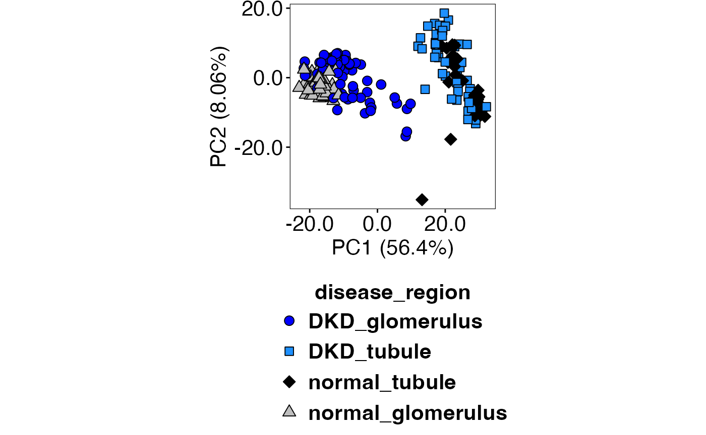
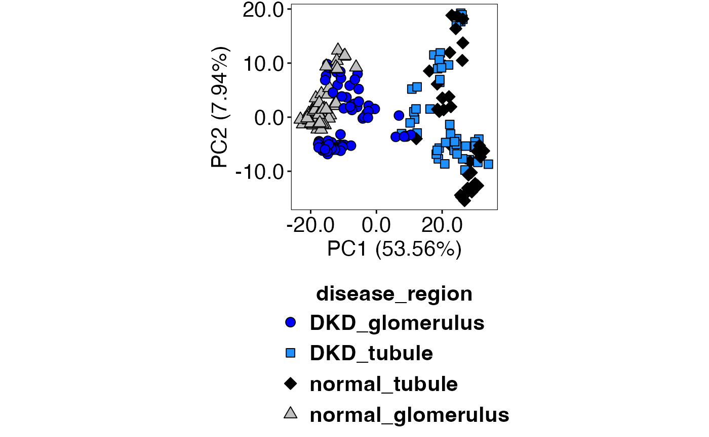
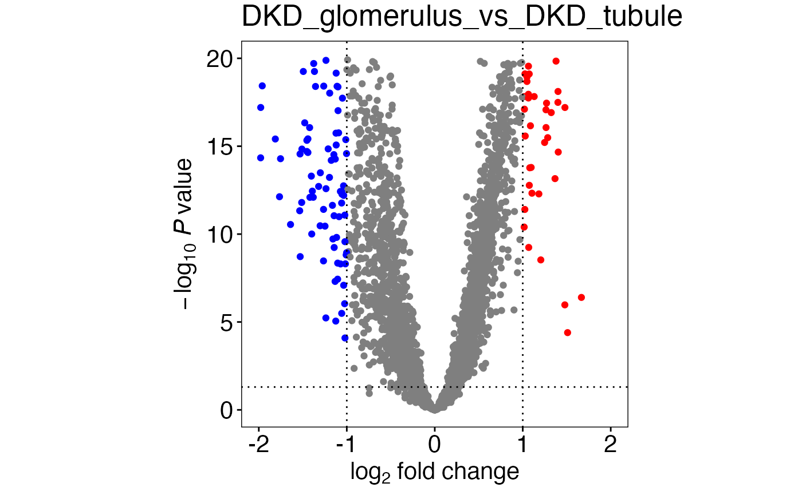
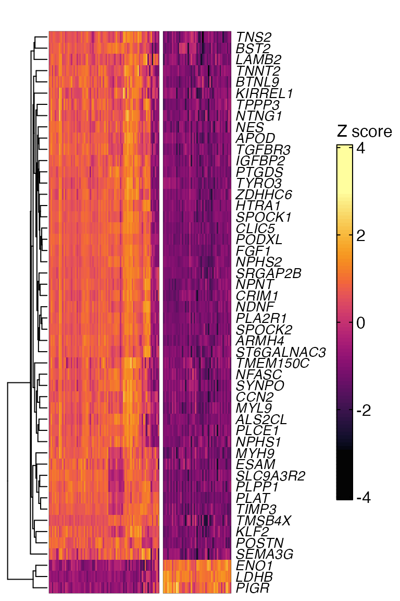

shinyDSP internal data processing pipeline explained
Seung J. Kim
Interstitial Lung Disease Lab, London Health Sciences Centerskim823@uwo.ca
Marco Mura
Interstitial Lung Disease Lab, London Health Sciences CenterDivision of Respirology, Department of Medicine, Western Universitymarco.mura@lhsc.on.ca
12 June 2025
Source:vignettes/shinyDSP_secondary.Rmd
shinyDSP_secondary.RmdIntroduction
The purpose of this vignette is to look under the hood and explain what a few underlying functions do to make this app work.
Data import
The human kidney data from Nanostring
is loaded from ExperimentHub(). Two files are required: a
count matrix and matching annotation file. Let’s read those files.
library(standR)
library(SummarizedExperiment)
library(ExperimentHub)
library(readr)
library(dplyr)
library(stats)
eh <- ExperimentHub()
AnnotationHub::query(eh, "standR")## ExperimentHub with 3 records
## # snapshotDate(): 2025-04-12
## # $dataprovider: Nanostring
## # $species: NA
## # $rdataclass: data.frame
## # additional mcols(): taxonomyid, genome, description,
## # coordinate_1_based, maintainer, rdatadateadded, preparerclass, tags,
## # rdatapath, sourceurl, sourcetype
## # retrieve records with, e.g., 'object[["EH7364"]]'
##
## title
## EH7364 | GeomxDKDdata_count
## EH7365 | GeomxDKDdata_sampleAnno
## EH7366 | GeomxDKDdata_featureAnno
countFilePath <- eh[["EH7364"]]
sampleAnnoFilePath <- eh[["EH7365"]]
countFile <- readr::read_delim(unname(countFilePath), na = character())
sampleAnnoFile <- readr::read_delim(unname(sampleAnnoFilePath), na = character())Time for this code chunk to run: 2.51 seconds
Variable(s) selection
A key step in analysis is to select a biological group(s) of
interest. Let’s inspect sampleAnnoFile.
colnames(sampleAnnoFile)## [1] "SlideName" "ScanName" "ROILabel"
## [4] "SegmentLabel" "SegmentDisplayName" "Sample_ID"
## [7] "AOISurfaceArea" "AOINucleiCount" "ROICoordinateX"
## [10] "ROICoordinateY" "RawReads" "TrimmedReads"
## [13] "StitchedReads" "AlignedReads" "DeduplicatedReads"
## [16] "SequencingSaturation" "UMIQ30" "RTSQ30"
## [19] "disease_status" "pathology" "region"
## [22] "LOQ" "NormalizationFactor" "RoiReportX"
## [25] "RoiReportY"## [1] "DKD" "normal"## [1] "glomerulus" "tubule"“disease_status” and “region” look like interesting variables. For
example, we might be interested in comparing “normal_glomerulus” to
“DKD_glomerulus”. The app can create a new sampleAnnoFile
where two or more variables of interest can be combined into one grouped
variable (under “Variable(s) of interest” in the main
side bar).
new_sampleAnnoFile <- sampleAnnoFile %>%
tidyr::unite(
"disease_region", # newly created grouped variable
c("disease_status","region"), # variables to combine
sep = "_"
)
new_sampleAnnoFile$disease_region %>% unique()## [1] "DKD_glomerulus" "DKD_tubule" "normal_tubule"
## [4] "normal_glomerulus"Time for this code chunk to run: 0.01 seconds
Finally a spatial experiment object can be created.
spe <- standR::readGeoMx(as.data.frame(countFile),
as.data.frame(new_sampleAnnoFile))Time for this code chunk to run: 0.3 seconds
Selecting groups to analyze
We merged “disease_status” and “region” to create a new group called,
“disease_region”. The app allows users to pick any subset of groups of
interest. In this example, the four possible groups are
“DKD_glomerulus”, “DKD_tubule”,“normal_tubule”, and “normal_glomerulus”.
The following script can subset spe to keep certain
groups.
selectedTypes <- c("DKD_glomerulus", "DKD_tubule", "normal_tubule", "normal_glomerulus")
toKeep <- colData(spe) %>%
tibble::as_tibble() %>%
pull(disease_region)
spe <- spe[, grepl(paste(selectedTypes, collapse = "|"), toKeep)]Time for this code chunk to run: 0.03 seconds
Applying QC filters
Regions of interest(ROIs) can be filtered out based on any
quantitative variable in colData(spe) (same as
colnames(new_sampleAnnoFile)). These options can be found
under the “QC” nav panel’s side bar. Let’s say
I want to keep ROIs whose “SequencingSaturation” is at least 85.
filter <- lapply("SequencingSaturation", function(column) {
cutoff_value <- 85
if(!is.na(cutoff_value)) {
return(colData(spe)[[column]] > cutoff_value)
} else {
return(NULL)
}
})
filtered_spe <- spe[,unlist(filter)]
colData(spe) %>% dim()## [1] 231 24## [1] 217 24Time for this code chunk to run: 0.02 seconds
We can see that 14 ROIs have been filtered out.
PCA
Two PCA plots (colour-coded by biological groups or batch) for three
normalization schemes are automatically created in the “PCA”
nav panel. Let’s take Q3 and RUV4 normalization as an
example.
speQ3 <- standR::geomxNorm(filtered_spe, method = "upperquartile")
speQ3 <- scater::runPCA(filtered_spe)
speQ3_compute <- SingleCellExperiment::reducedDim(speQ3, "PCA")Time for this code chunk to run: 0.64 seconds
speRuv_NCGs <- standR::findNCGs(filtered_spe,
batch_name = "SlideName",
top_n = 200)
speRuvBatchCorrection <- standR::geomxBatchCorrection(speRuv_NCGs,
factors = "disease_region",
NCGs = S4Vectors::metadata(speRuv_NCGs)$NCGs, k = 2
)
speRuv <- scater::runPCA(speRuvBatchCorrection)
speRuv_compute <- SingleCellExperiment::reducedDim(speRuv, "PCA")Time for this code chunk to run: 3.04 seconds
Then, .PCAFunction() is called to generate the plot. We
can see that biological replicates group better with RUV4 (top) compared
to Q3 (bottom).
.PCAFunction(speRuv, speRuv_compute, "disease_region", selectedTypes, c(21,22,23,24), c("blue","dodgerblue1","black","grey75"))
.PCAFunction(speQ3, speQ3_compute, "disease_region", selectedTypes, c(21,22,23,24), c("blue","dodgerblue1","black","grey75"))
Time for this code chunk to run: 0.27 secondsDesign matrix
Let’s proceed with RUV4 normalization. A design matrix is created next.
design <- model.matrix(~0+disease_region+ruv_W1+ruv_W2, data = colData(speRuv))
# Clean up column name
colnames(design) <- gsub("disease_region", "", colnames(design))Time for this code chunk to run: 0.01 seconds
If confounding variables are chosen in the main
side bar, those would be added to model.matrix
as ~0 + disease_region + confounder1 + confounder2).
Creating a DGEList
edgeR is used to convert SpatialExperiment
into DGEList, filter and estimate dispersion.
library(edgeR)
dge <- SE2DGEList(speRuv)
keep <- filterByExpr(dge, design)
dge <- dge[keep, , keep.lib.sizes = FALSE]
dge <- estimateDisp(dge, design = design, robust = TRUE)Time for this code chunk to run: 11.72 seconds
Comparison between all biological groups
Recall our “selectedTypes” from above: “DKD_glomerulus”, “DKD_tubule”, “normal_tubule”, “normal_glomerulus”.
The following code creates all pairwise comparisons between them.
# In case there are spaces
selectedTypes_underscore <- gsub(" ", "_", selectedTypes)
comparisons <- list()
comparisons <- lapply(
seq_len(choose(length(selectedTypes_underscore), 2)),
function(i) {
noquote(
paste0(
utils::combn(selectedTypes_underscore, 2,
simplify = FALSE
)[[i]][1],
"-",
utils::combn(selectedTypes_underscore, 2,
simplify = FALSE
)[[i]][2]
)
)
}
)
con <- makeContrasts(
# Must use as.character()
contrasts = as.character(unlist(comparisons)),
levels = colnames(design)
)
colnames(con) <- sub("-", "_vs_", colnames(con))
con## Contrasts
## Levels DKD_glomerulus_vs_DKD_tubule
## DKD_glomerulus 1
## DKD_tubule -1
## normal_glomerulus 0
## normal_tubule 0
## ruv_W1 0
## ruv_W2 0
## Contrasts
## Levels DKD_glomerulus_vs_normal_tubule
## DKD_glomerulus 1
## DKD_tubule 0
## normal_glomerulus 0
## normal_tubule -1
## ruv_W1 0
## ruv_W2 0
## Contrasts
## Levels DKD_glomerulus_vs_normal_glomerulus
## DKD_glomerulus 1
## DKD_tubule 0
## normal_glomerulus -1
## normal_tubule 0
## ruv_W1 0
## ruv_W2 0
## Contrasts
## Levels DKD_tubule_vs_normal_tubule DKD_tubule_vs_normal_glomerulus
## DKD_glomerulus 0 0
## DKD_tubule 1 1
## normal_glomerulus 0 -1
## normal_tubule -1 0
## ruv_W1 0 0
## ruv_W2 0 0
## Contrasts
## Levels normal_tubule_vs_normal_glomerulus
## DKD_glomerulus 0
## DKD_tubule 0
## normal_glomerulus -1
## normal_tubule 1
## ruv_W1 0
## ruv_W2 0Time for this code chunk to run: 0.01 seconds
Fitting a linear regression model with limma
The app uses duplicateCorrelation() “[s]ince we need to
make comparisons both within and between subjects, it is necessary to
treat Patient as a random effect” limma
user’s guide (Ritchie et al. 2015).
limma-voom method is used as standR package
recommends (Liu et
al. 2024).
library(limma)
block_by <- colData(speRuv)[["SlideName"]]
v <- voom(dge, design)
corfit <- duplicateCorrelation(v, design,
block = block_by
)
v2 <- voom(dge, design,
block = block_by,
correlation = corfit$consensus
)
corfit2 <- duplicateCorrelation(v, design,
block = block_by
)
fit <- lmFit(v, design,
block = block_by,
correlation = corfit2$consensus
)
fit_contrast <- contrasts.fit(fit,
contrasts = con
)
efit <- eBayes(fit_contrast, robust = TRUE)Time for this code chunk to run: 47.98 seconds
Tables of top differentially expressed genes
For each contrast (a column in con), the app creates a
table of top differentially expressed genes sorted by their adjusted P
value.
# Keep track of how many comparisons there are
numeric_vector <- seq_len(ncol(con))
new_list <- as.list(numeric_vector)
# This adds n+1th index to new_list where n = ncol(con)
# This index contains seq_len(ncol(con))
# ex. new_list[[7]] = 1 2 3 4 5 6
# This coefficient allows ANOVA-like comparison in toptable()
if (length(selectedTypes) > 2) {
new_list[[length(new_list) + 1]] <- numeric_vector
}
topTabDF <- lapply(new_list, function(i) {
limma::topTable(efit,
coef = i, number = Inf, p.value = 0.05,
adjust.method = "BH", lfc = 1
) %>%
tibble::rownames_to_column(var = "Gene")
})
# Adds names to topTabDF
if (length(selectedTypes) > 2) {
names(topTabDF) <- c(
colnames(con),
colnames(con) %>% stringr::str_split(., "_vs_") %>%
unlist() %>% unique() %>% paste(., collapse = "_vs_")
)
} else {
names(topTabDF) <- colnames(con)
}Time for this code chunk to run: 0.03 seconds
topTabDF is now a list of tables where the list index
corresponds to that of columns in con.
colnames(con)## [1] "DKD_glomerulus_vs_DKD_tubule" "DKD_glomerulus_vs_normal_tubule"
## [3] "DKD_glomerulus_vs_normal_glomerulus" "DKD_tubule_vs_normal_tubule"
## [5] "DKD_tubule_vs_normal_glomerulus" "normal_tubule_vs_normal_glomerulus"
head(topTabDF[[1]])## Gene Type mean_zscore mean_expr logFC AveExpr t P.Value
## 1 SRGAP2B gene 5.392825 8.094697 2.591325 8.064988 30.74096 1.974029e-80
## 2 PODXL gene 11.146967 8.563414 4.502203 8.518927 30.81248 4.080221e-80
## 3 FGF1 gene 8.865378 7.692389 3.539804 7.632976 30.30632 7.097517e-79
## 4 CLIC5 gene 9.624410 7.925377 3.780739 7.869413 29.14067 5.750702e-76
## 5 PLAT gene 8.262970 8.297025 3.965194 8.256626 29.08766 7.827953e-76
## 6 SPOCK1 gene 5.899207 7.119840 2.745986 7.061100 28.75805 6.656020e-76
## adj.P.Val B
## 1 3.628068e-76 172.6863
## 2 3.749520e-76 171.7997
## 3 4.348175e-75 168.8320
## 4 2.397832e-72 162.3045
## 5 2.397832e-72 162.1593
## 6 2.397832e-72 162.1138These tables are then shown to the user in the “Tables”
nav panel.
Volcano plot and heatmap
No further serious data processing is performed at this
point. The numbers in topTabDF is now parsed to create
volcano plots and heatmaps in their respective
nav panels.
volcanoDF <- lapply(seq_len(ncol(con)), function(i) {
limma::topTable(efit, coef = i, number = Inf) %>%
tibble::rownames_to_column(var = "Target.name") %>%
dplyr::select("Target.name", "logFC", "adj.P.Val") %>%
dplyr::mutate(de = ifelse(logFC >= 1 &
adj.P.Val < 0.05, "UP",
ifelse(logFC <= -(1) &
adj.P.Val < 0.05, "DN",
"NO"
)
)) %>%
dplyr::mutate(
logFC_threshold = stats::quantile(abs(logFC), 0.99,
na.rm = TRUE
),
pval_threshold = stats::quantile(adj.P.Val, 0.01,
na.rm = TRUE
),
deLab = ifelse(abs(logFC) > logFC_threshold &
adj.P.Val < pval_threshold &
abs(logFC) >= 0.05 &
adj.P.Val < 0.05, Target.name, NA)
)
})
plots <- lapply(seq_along(volcanoDF), function(i) {
.volcanoFunction(
volcanoDF[[i]], 12, 5,
colnames(con)[i],
1, 0.05,
"Blue", "Grey", "Red"
) +
ggplot2::xlim(
-2,
2
) +
ggplot2::ylim(
0, 20
)
})
plots[1]## [[1]]
Time for this code chunk to run: 0.44 secondsIn contrast to Volcano plots, only the top N genes are shown in a heatmap. Setup is a bit more involved.
lcpmSubScaleTopGenes <- lapply(names(topTabDF), function(name) {
columns <- stringr::str_split_1(name, "_vs_") %>%
lapply(function(.) {
which(SummarizedExperiment::colData(speRuv) %>%
tibble::as_tibble() %>%
dplyr::pull(disease_region) == .)
}) %>%
unlist()
table <- SummarizedExperiment::assay(speRuv, 2)[
topTabDF[[name]] %>%
dplyr::slice_head(n = 50) %>%
dplyr::select(Gene) %>%
unlist() %>%
unname(),
columns
] %>%
data.frame() %>%
t() %>%
scale() %>%
t()
return(table)
})
names(lcpmSubScaleTopGenes) <- names(topTabDF)
columnSplit <- lapply(names(topTabDF), function(name) {
columnSplit <- stringr::str_split_1(name, "_vs_") %>%
lapply(function(.){
which(
SummarizedExperiment::colData(speRuv) %>%
tibble::as_tibble() %>% dplyr::select(disease_region) == .
)
} ) %>%
as.vector() %>%
summary() %>%
.[, "Length"]
})
names(columnSplit) <- names(lcpmSubScaleTopGenes)Time for this code chunk to run: 0.22 seconds
colFunc <- circlize::colorRamp2(
c(
-3, 0,
3
),
hcl_palette = "Inferno"
)
heatmap <- lapply(names(lcpmSubScaleTopGenes), function(name) {
ComplexHeatmap::Heatmap(lcpmSubScaleTopGenes[[name]],
cluster_columns = FALSE, col = colFunc,
heatmap_legend_param = list(
border = "black",
title = "Z score",
title_gp = grid::gpar(
fontsize = 12,
fontface = "plain",
fontfamily = "sans"
),
labels_gp = grid::gpar(
fontsize = 12,
fontface = "plain",
fontfamily = "sans"
),
legend_height = grid::unit(
3 * as.numeric(30),
units = "mm"
)
),
top_annotation = ComplexHeatmap::HeatmapAnnotation(
foo = ComplexHeatmap::anno_block(
gp = grid::gpar(lty = 0, fill = "transparent"),
labels = columnSplit[[name]] %>% names(),
labels_gp = grid::gpar(
col = "black", fontsize = 14,
fontfamily = "sans",
fontface = "bold"
),
labels_rot = 0, labels_just = "center",
labels_offset = grid::unit(4.5, "mm")
)
),
border_gp = grid::gpar(col = "black", lwd = 0.2),
row_names_gp = grid::gpar(
fontfamily = "sans",
fontface = "italic",
fontsize = 10
),
show_column_names = FALSE,
column_title = NULL,
column_split = rep(
LETTERS[seq_len(columnSplit[[name]] %>% length())],
columnSplit[[name]] %>% unname() %>% as.numeric()
)
)
})
names(heatmap) <- names(lcpmSubScaleTopGenes)
heatmap[[1]]
Time for this code chunk to run: 0.66 seconds